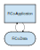

This is a minimal showcase for a model with model-elements and related requirements. It covers pretty much all characteristics neeeded in such cases (including 'statements on statements'), so that transformations and expressive power of other data formats can be evaluated. The example and its representation in SpecIF format is discussed in Tutorial 6: Very Simple Model (FMC) and Tutorial 9: Very Simple Model (FMC) with Requirements.
The data store MUST support a total volume up to 850 GB.
| Priorität | eher hoch |
| ○ FiCo-Data | erfüllt | ↯ Data Volume |
The data store MUST be consistent at all times.
| Priorität | hoch |
| ○ FiCo-Data | erfüllt | ↯ Consistency |
The system SHOULD respond on user queries within 300 ms.
| Priorität | mittel |
| □ FiCo-Application | erfüllt | ↯ Response Time |
Model Diagram:

| Element-Typ | FMC Block Diagram |
| ▣ IT-Integration: FiCo-Application and FiCo-Data | zeigt | □ FiCo-Application ○ FiCo-Data |
IT-Application for Finance and Controlling.
| ▣ IT-Integration: FiCo-Application and FiCo-Data | zeigt | □ FiCo-Application |
| □ FiCo-Application | schreibt | ○ FiCo-Data |
| □ FiCo-Application | liest | ○ FiCo-Data |
| □ FiCo-Application | erfüllt | ↯ Response Time |
Finance and Controlling Data, such as cost-units per project with budget, accrued cost etc.
| ▣ IT-Integration: FiCo-Application and FiCo-Data | zeigt | ○ FiCo-Data |
| □ FiCo-Application | schreibt | ○ FiCo-Data |
| □ FiCo-Application | liest | ○ FiCo-Data |
| ○ FiCo-Data | erfüllt | ↯ Data Volume ↯ Consistency |
| Element-Typ | Modellelemente (Glossar) |
IT-Application for Finance and Controlling.
| ▣ IT-Integration: FiCo-Application and FiCo-Data | zeigt | □ FiCo-Application |
| □ FiCo-Application | schreibt | ○ FiCo-Data |
| □ FiCo-Application | liest | ○ FiCo-Data |
| □ FiCo-Application | erfüllt | ↯ Response Time |
Finance and Controlling Data, such as cost-units per project with budget, accrued cost etc.
| ▣ IT-Integration: FiCo-Application and FiCo-Data | zeigt | ○ FiCo-Data |
| □ FiCo-Application | schreibt | ○ FiCo-Data |
| □ FiCo-Application | liest | ○ FiCo-Data |
| ○ FiCo-Data | erfüllt | ↯ Data Volume ↯ Consistency |